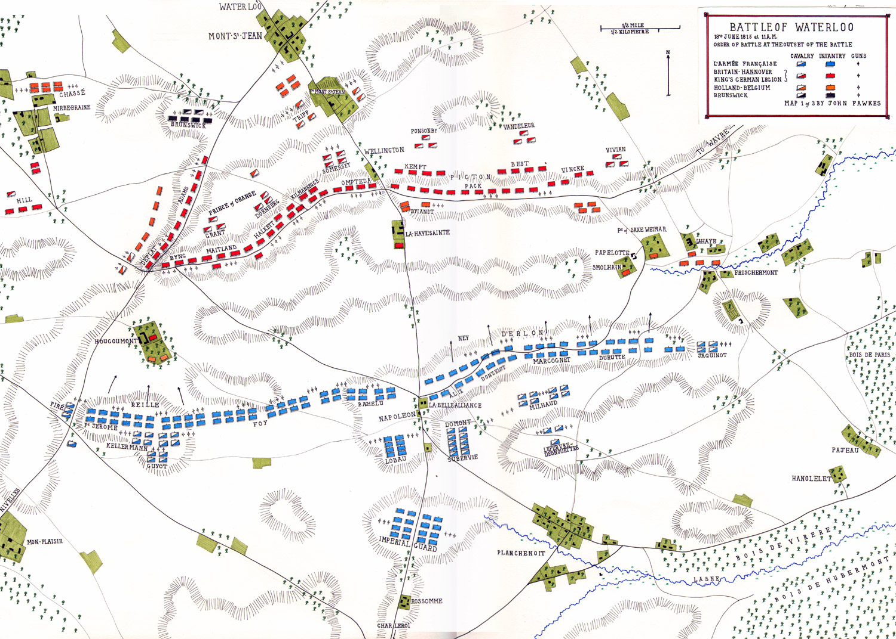
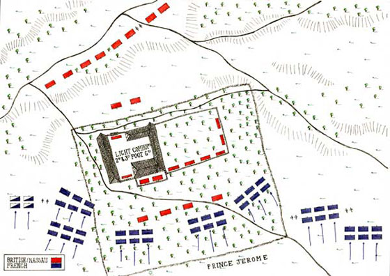

Chương XVI (Tt)
4
Vừa mới bắt đầu triều đại mới, Napoléon đã trịnh trọng hứa sẽ đem lại cho nước Pháp tự do và hòa bình, như vậy là ông đã thẳng thắn và công khai thừa nhận, như ông đã từng nhắc lại ở Grenoble, Lyon, Paris rằng thời kỳ trị vì trước đây của ông ta đã không đem lại cho nước Pháp tự do cũng như hòa bình. Gã Napoléon mà lại say mê hòa bình và tự do, điều đó đập vào tai nhân dân Pháp và Châu Âu chẳng khác gì nói lửa thì giá lạnh, băng tuyết thì nóng bỏng.
Với trí thông minh kỳ diệu, chỉ thoáng nhìn qua cũng đã nắm chắc và phán đoán được việc mọi việc một cách minh mẫn, Napoléon hoàn toàn hiểu rằng nếu ông đã chiếm được ngai vàng nước Pháp trong vài ngày bằng hai bàn tay không, chẳng một trận giao tranh thì hoàn toàn không phải vì tất cả mọi người đều đã bị nội dung rộng lớn của cái tự do và tính chất bền vững của cái hòa bình mà ông đã hứa hẹn ấy cám dỗ họ. Bọn Bourbon chưa vi phạm hòa bình, cũng không có ý định vi phạm. Nhân dân đã quay lưng với chúng vì một lý do khác. Napoléon hiểu rất rõ rằng sở dĩ ông thành công lớn như vậy là do những lời hứa hẹn của ông với giai cấp nông nhân, tức là với quảng đại quần chúng nhân dân.
“Những con người không vụ lợi đã dẫn tôi về Paris. Hạ sĩ quan và binh lính đã làm tất cả. Tôi hoàn toàn chịu ơn nhân dân và quân đội”. Napoléon đã nhắc lại như vậy vào đêm 20 tháng 3 năm 1815, khi trở lại điện Tuileries, có Fleury de Chabulon chứng kiến.
“Nông dân hò reo: “Hoàng Đế muôn năm, đả đảo quý tộc! Đả đảo thầy tu!”. Họ đi theo tôi từ thành phố này sang thành phố khác, đến khi họ không thể đi xa ơn được nữa thì họ giao phó cho những người khác nhiệm vụ hộ tống tôi về Paris. Nông dân xứ Provence đã hộ tống tôi, sau họ là nông dân miền Dauphiné, sau nông dân Dauphiné là nông dân Lyon, sau nông dân Lyon là nông dân Bourgogne, và những kẻ thật sự âm mưu đem lại cho tôi những người bạn thân thiết ấy lại chính là bọn Bourbon”. Trong những ngày sau khi về tới điện Tuileries, Napoléon đã nói như vậy về chuyến đi đầy thắng lợi rực rỡ của mình.
Nhưng, thoả mãn được nguyện vọng của nhân dân, ít ra cũng là một bộ phận trong họ, là việc dễ dàng: Đối với họ, Napoléon là tượng trưng cho sự xoá bỏ hoàn toàn những luật lệ phong kiến, tượng trưng cho sự đảm bảo quyền sở hữu ruộng đất của nông dân. Sự thật, nông dân còn mong muốn không có chiến tranh, không có nạn trưng binh và khi ông Hoàng Đế nói về chính sách hòa bình trong tương lai thì họ đã chăm chú nghe ngóng. Nhưng dầu sao, vấn đề hòa bình ấy cũng chưa phải là vấn đề quan trọng hàng đầu mà là vấn đề khác.
Napoléon biết rằng trong 11 tháng sống dưới chế độ quân chủ lập hiến, báo chí được hưởng đôi chút tự do, thì nay không phải giai cấp tư sản chỉ trông đợi ở ông ta những quyền tự do tối thiểu, ông ta phải minh họa càng sớm càng hay cho chương trình mà ông ta đã trình bày trên con đường tiến về Paris, khi ông ta đóng vai trò lưu vong ra khỏi nước Pháp, ông đã nói như vậy ở Grenoble: “Tôi xuất thân từ cách mạng”, ông ta tuyên bố thế ở Lyon: “Tôi về để kéo dân Pháp thoát khỏi vòng nô lệ mà bọn quý tộc và thầy tu đang muốn dìm họ vào... bọn chúng hãy coi chừng! Rồi chúng khắc biết tay tôi”.
Napoléon đã nhận được hàng loạt lời chúc từ những người Jacobin cũ ở các tỉnh, lọt lưới trong những cuộc khủng bố ở thời kỳ trị vì lần thứ nhất của Napoléon. Lúc này, những người ấy đã chào đón Napoléon như một tay cách mạng vô địch chống bọn Bourbon, bọn quý tộc, bọn tu sĩ và linh mục. Ở Toulouse, suốt trong một ngày trời, người ta rước tượng bán thân ông Hoàng Đế đi diễu khắp thành phố, vừa hát bài Marseille vừa hô lớn: “Quẳng bọn quý tộc vào lò than!” Từ các tỉnh, người ta gửi về cho Davout - vị Thống Chế được Napoléon rất yêu mến và bổ nhiệm làm Bộ Trưởng Bộ Chiến Tranh - nhiều kiến nghị yêu cầu Hoàng Đế thiết lập chế độ khủng bố như năm 1973. Napoléon thấu hiểu tâm trạng ấy. Buổi tối ngày 20 - 3, khi người ta mới rước, Napoléon đã nói với bá tước Molé:”Tôi lại thấy toàn thể quần chúng căm thù mãnh liệt bọn linh mục và quý tộc như hồi đầu cách mạng”.
Nhưng, cũng như năm 1812, ở điện Kremlin, Napoléon không dám liên minh với cuộc cách mạng nông dân ở Nga, thì năm 1815 cũng vậy, tại điện Tuileries, Napoléon đã lùi bước khi nghĩ đến việc dựa vào nông dân lao động và dựa vào chính sách khủng bố có tính chất cách mạng. Cũng như trước kia khi Napoléon đã không cầu cứu đến một “Pugachev”, lúc này ông ta không cầu cứu đến một “Marat”, và đó không phải là việc ngẫu nhiên.
Trong xã hội Pháp, giai cấp đã từng chiến thắng trong thời kỳ cách mạng - chúng tôi muốn nói đến giai cấp đại tư sản - là giai cấp duy nhất mà Napoléon cảm thông và cùng chung nguyện vọng. Napoléon là người đại diện chủ yếu của họ, là người đã củng cố thắng lợi của họ. Chính Napoléon đã tìm dựa vào giai cấp ấy, chính là vì quyền lợi của giai cấp ấy mà Napoléon chuẩn bị sẵn sàng đấu tranh. Và cũng như năm 1812, Napoléon thấy mình gần gũi kẻ thù là Aleksandr đệ nhất hơn là gần gũi quần chúng nông dân Nga, thì vào năm 1815, Napoléon cũng đã không muốn dựa vào cách mạng mặc dầu là để đấu tranh chống lại quân đội người thù địch. Napoléon đã nói với Benjamin Constant, một đại biểu điển hình cho nguyện vọng của giai cấp tư sản thời đó: “Tôi không muốn là một ông vua của phong trào nông dân”. Sau khi trở lại trị vì ít lâu, Hoàng Đế đã cho gọi Benjamin đến cung điện để thảo luận quyết định việc cải tổ các tổ chức Nhà Nước theo tinh thần tự do. Sự cải tố ấy, nhằm thoả mãn giai cấp đại tư sản, đã chứng minh cái nhiệt tình mới mẻ của Napoléon đối với tự do và đồng thời xoa dịu phái Jacobin đang trỗi dậy.
Cũng rất đáng chú ý rằng, Napoléon biết rõ lúc này chỉ có tinh thần triệt để cách mạng mới giúp cho mình, chứ không phải đạo luật đẹp mã của chủ nghĩa tự do ôn hòa. Sau này, khi nhắc lại năm 1815, Napoléon nói: “Kế hoạch phòng ngự của tôi chẳng có tác dụng gì hết, bởi vì những phương tiện đều không vượt được nguy cơ. Đáng lẽ tôi phải làm lại cuộc cách mạng, triệt để lợi dụng những khả năng do cách mạng đẻ ra. Đáng lẽ tôi phải kích thích mọi khát vọng, mọi nhiệt tình để lợi dụng sự mù quáng của chúng. Thiếu những cái đó, nên tôi đã không cứu được nước Pháp”. Và nhà viết sử quân sự nổi tiếng là Jomini cũng hoàn toàn tán thành ý kiến đó của Hoàng Đế. Từ bỏ cả việc làm sống lại phong trào năm 1793 và những lực lượng vĩ đại của cách mạng mà ông ta đã nhận được, Napoléon đã cho tìm kiếm Benjamin đang trốn tránh và cho dẫn về cung điện Tuileries. Nhà ký giả và lý luận về tư tưởng tự do này đi trốn vì trước khi Hoàng Đế tới Paris, hắn đã viết báo nói việc Hoàng Đế quay lại là một tai họa chung, và coi Napoléon là cùng một đồng một cốt với Neron.
Benjamin Constant run sợ trình diện trước Napoléon và đã vô cùng sung sướng khi biết rằng không những hắn không bị bắn mà còn được người ta đề nghị hắn thảo ra ngay một bản hiến pháp của đế quốc Pháp. Napoléon tiếp Constant ngày 6 - 4, đến ngày 23 thì bản hiến pháp đã thảo xong, với cái tên kỳ quặc: ”Văn kiện bổ sung hiến pháp của đế chế”. Đó là Napoléon muốn nói thời kỳ trị vì thứ nhất với thời kỳ thứ hai của ông. Còn Constant thì chỉ việc sửa lại bản hiến pháp của Louis XVIII cho có đôi chút tính chất tự do. Suất thuế tuyển cử quy định cho người bầu cử và ứng cử có giảm nhiều, nhưng muốn được ứng cử vẫn phải giàu có. Tự do báo chí cũng được bảo đảm thêm một chút. Chế độ kiểm duyệt trước bị bãi bỏ, và từ nay trở đi chỉ có toà án mới được xét xử những tội trạng về báo chí.
Bên trên Hạ Nghị Viện do bầu cử (300 nghị viên), lập thêm một Thượng Viện do Hoàng Đế chỉ định theo tước vị dòng thế lập. Luật pháp phải do hai viện thông qua và được Hoàng Đế phê chuẩn.
Napoléon chuẩn y bản dự luật đó và bản hiến pháp mới được công bố ngày 23/4. Hoàng Đế đã không chống đối gì lắm tác phẩm tự do của Benjamin. Ông chỉ muốn hoãn thời gian bầu cử và việc triệu tập hai viện cho đến khi nào giải quyết xong vấn đề chiến tranh: Nếu như chiến thắng rồi, người ta thấy rõ rằng các nghị sĩ, báo chí và ngay cả bản thân Benjamin nữa sẽ phải làm gì, và lúc bấy giờ thì bản hiến pháp ấy để ổn định tinh thần chung. Nhưng giai cấp tư sản tự do không tin gì lắm vào chủ nghĩa tự do của ông Hoàng Đế và nó đã yêu cầu khẩn thiết Hoàng Đế cấp tốc triệu tập họp hai viện. Sau vài lần phản đối, Napoléon bằng lòng và ấn định ngày 25 tháng 5 sẽ họp “Hội Đồng Tháng Năm”, trong thời gian ấy sẽ phải công bố kết quả cuộc bầu phiếu của toàn dân mà Hoàng Đế đã chấp nhận theo hiến pháp mới của mình và đồng thời cũng phải làm lễ trao cờ cho quân đội vệ quốc trước khi khai mạc khoá họp của hai viện.
Cuộc bầu phiếu có 1.552.450 phiếu thuận và 4.800 phiếu chống bản hiến pháp. Thực tế, lễ trao cờ đã tổ chức long trọng và cảm động vào ngày 1 tháng 6 chứ không phải 26 tháng 5; cũng ngày 1 tháng 6, khoá họp của Hạ Nghị Viện mới tuyển cử xong đã khai mạc và lấy tên là Hội Đồng Lập Pháp.
Các vị đại biểu làm việc chưa được một tuần rưỡi thì Napoléon đã không bằng lòng họ và nổi giận. Ông ta không thể chịu được bất cứ một sự hạn chế nào về quyền hành của mình, thậm chí không chịu được những biểu hiện có tính độc lập của các Hạ Nghị Sĩ, dù rằng nhỏ nhặt nhất. Nghị Viện đã bầu Lanjuinais, một người tự do ôn hòa, trước thuộc phái Girondins, làm chủ tịch. Cảm tình của Napoléon đối với Lanjuinais rất bình thường. Nhưng không thể vì thế mà cho rằng Lanjuinais manh tâm chống đối. Chắc chắn là Lanjuinais ưa thích Napoléon hơn bọn Bourbon, nhưng khi nhận lời chúc mừng đầy thái độ khuất phục và tôn kính của cơ quan lập pháp, Napoléon đã nổi khùng và nói: “Chúng ta đừng có giống như những người Hy Lạp ở thời kỳ đế quốc La Mã suy tàn, họ tranh cãi để mua vui với nhau khi giặc đã đến phá thành”. Như vậy Napoléon nói đến Khối Liên Minh Châu Âu đang ùn ùn tập trung lực lượng từ khắp các nơi kéo đến biên giới nước Pháp.
Napoléon nhận lời chúc mừng của các vị dân biểu ngày 11/6 và ngày 12 thì ông lại trở về với quân đội để quyết đấu một trận lớn cuối cùng với Châu Âu. Khi lên đường, Napoléon hiểu rõ rằng ông bỏ lại ở hậu phương những con người chẳng đáng tin cậy gì: Không phải chỉ những người thuộc phái tự do trong Nghị Viện, còn cả cái kẻ mà Napoléon đã không trả lại chức Bộ Trưởng Bộ Công An ngay khi ông từ đảo Elba trở về. Trước khi Napoléon vào Paris, Joseph Fouché đã lập mưu làm cho bọn Bourbon tức giận hắn, như vậy là hắn đã tự gây cho hắn điều rủi ro, và cái mưu mô gian xảo ấy đã đem lại cho hắn chức Bộ Trưởng khi Napoléon vào Paris. Hắn có thể tiến hành bất cứ một âm mưu nào, làm bất cứ một chuyện đê tiện nào và bất cứ một sự phản bội nào, có bao giờ Napoléon phải ngờ vực điều đó. Nhưng, trước hết là tỉnh Vendée đang lộn xộn và Fouché là người biết rõ hơn ai hết phương pháp đối phó với cuộc khởi loạn ở Vendée. Sau nữa là Hoàng Đế đã tin cậy vào mối bất hòa giữa Fouché và bọn Bourbon. Và, cũng như trong thời gian trị vì trước đây: Vừa sử dụng tài mật thám và tài khiêu khích của Fouché, vừa tuyệt đối bí mật cử người chuyên giám sát Fouché.
Để làm việc ấy, Napoléon đã chọn Fleury de Chabulon. Có lần Chabulon đã khám phá được một vài chuyện thông đồng bí mật của Fouché với Metternich. Đúng là Fouché đã gỡ thoát được việc đó, nhưng không phải Napoléon đã không kết thúc cuộc gặp gỡ với hắn (sự viện xảy ra vào tháng 5 bằng những lời sau đây:”Fouché! Ngươi là một tên phản bội. Ta chỉ còn việc treo cổ ngươi lên thôi!”. Đã làm việc lâu năm với Napoléon đã quen nghe những câu chửi mắng như vậy nên Fouché vừa cúi rạp mình cung kính vừa đáp: “Tâu Bệ Hạ, hạ thần không tán thành ý kiến ấy của Bệ Hạ”).
Nhưng làm gì bây giờ? Nếu thắng được quân Liên Minh, nghị viên sẽ khuất phục, Fouché sẽ trung thành và vô hại. Bằng không, ai sẽ chôn vùi nền đế chế? Những nghị sĩ thuộc phái tự do hay những Bộ Trưởng phản nghịch? Điều đó có quan trọng gì lắm đâu.
Napoléon tin cậy vào Davout, để Davout ở lại làm toàn quyền thành phố và làm Bộ Trưởng Bộ Chiến Tranh. Napoléon cũng tin cậy vào Carnot, con người Cộng Hòa cựu trào này lâu nay vẫn không chịu phục vụ kẻ chuyên chế từng sát hại nền Cộng Hòa, đã đích thân đến xin phục vụ kẻ ấy vào năm 1815, vì Carnot coi bọn Bourbon là cái tai họa ghê tởm nhất.
Napoléon biết một cách rất chắc chắn là khu ngoại ô thợ thuyền sẽ không nổi dậy ở sau lưng Napoléon như vào năm 1813 và năm 1814, đó cũng là lý do khuyến khích Carnot ra phục vụ Napoléon và người Jacobin vui mừng đón chào cuộc đổ của Napoléon ở vùng vịnh Juan. Napoléon hiểu rằng lúc này, thợ thuyền, cũng như Carnot và những người Jacobin ở các tỉnh, đều không nhìn Napoléon là một ông Hoàng Đế đương bảo vệ ngôi báu của mình chống lại một kẻ khác đang mưu toan lên ngôi, mà coi ông là người tổng chỉ huy các lực lượng vũ trang của nước Pháp xuất thân từ cách mạng, là người đi chiến đấu bảo vệ đất nước, chống sự can thiệp của nước ngoài, chống bọn Bourbon đang khôi phục lại chế độ cũ. Trước con mắt cả thế giới, của bạn cũng như thù, người thủ lĩnh ấy là một người thầy có một không hai trong nghệ thuật chiến tranh, người chỉ huy thiên tài lỗi lạc nhất của mọi thời đại, một nhà chiến lược và chiến thuật kỳ tài, không ai bì kịp. Nước Pháp và Châu Âu, trước kia đã nổi dậy chống lại người đó thì nay lưỡng lữ.
5
Cuộc chiến tranh cuối cùng này của Napoléon đã luôn luôn là đối tượng của các cuộc tranh luận hăng say và đã thường xuyên cung cấp một đề tài phong phú cho các công trình nghiên cứu của các nhà bác học cũng như các sáng tác tác phẩm của các nhà văn. Hầu như mọi người đều thấy ở đó một chuỗi những sự việc rủi ro làm tiêu tan thắng lợi đã nắm sẵn trong tay Napoléon.
Đứng trên quan điểm phân tích khoa học và hiện thực chủ nghĩa các sự kiện thì đặt vấn đề như vậy chỉ có ích cho những nhà bình luận quân sự. Cho dù người ta có dễ dàng công nhận luận điểm đó đi chăng nữa, hoặc cho dù người ta có thừa nhận về đại thể và không tranh cãi rằng nếu không có những sự ngẫu nhiên, Napoléon ắt đã chiến thắng trong trận Waterloo thì rồi cuối cùng, chắn chắn cuộc chiến tranh cũng vẫn sẽ kết thúc như vậy: Nền đế chế đã bị lên án, vì toàn Châu Âu mới chỉ đang bắt đầu phát triển lực lượng, còn Napoléon thì đã dốc hết lực lượng quận sự hiện có và dự trữ của mình.
Ngày 10/6/1815, Hoàng Đế có trong tay19 vạn 8 nghìn quân thì đã phải phân tán một phần ba trên đất nước (ông phải để lại ở Vendée gần 6 vạn 5 nghìn quân để đề phòng mọi bất trắc). Đối với chiến dịch đang mở, Napoléon chỉ có thể trông vào khoảng 12 vạn 8 nghìn quân và 344 khẩu pháo, kể cả quân số của đội cận vệ, của năm quân đoàn và của đội kỵ binh dự bị. Cũng phải kể đến khoảng 20 vạn người nữa của lực lượng vệ quốc và các đơn vị khác không nằm trong biên chế của quân đội, trong đó một nửa không được cấp quần áo mặc và một phần ba không có vũ khí. Nếu chiến dịch kéo dài thì nhờ tài tổ chức của Bộ Trưởng Bộ Chiến Tranh Davout, Napoléon còn có thể tập hợp thêm được từ 23 đến 24 vạn người tuy rằng chật vật. Dù lúc đầu Napoléon đã chiến thắng, nhưng làm thế nào mà chiến tranh lại không kéo dài được? Vì quân Anh, Phổ, Áo, Nga đã tung ra một lúc 70 vạn quân, và còn có thể huy động thêm 30 vạn nữa vào cuối mùa hè, chưa kể những lực lượng bổ sungsẽ sẵn sàng xuất trận vào mùa thu. Phe Liên Minh tính sẽ huy động tất cả một triệu quân.
Khối Liên Minh đã nhất quyết tính cho xong Napoléon. Sau thời gian đầu hốt hoảng và mất tinh thần, tất cả các Chính Phủ của các nước dự Hội Nghị Vienna đều tỏ ra kiên quyết chưa từng thấy. Mọi ý đồ đàm phán riêng lẻ với nước này hay nước khác của Napoléon đều bị cự tuyệt. Napoléon đã bị đặt ngoài vòng pháp luật, bị coi như 'kẻ thù của nhân loại”.
Chỉ cần nhắc lại rằng, dù bỏ ngoài không tính đến những cường quốc đứng hàng thứ hai, thì ngay sau trận Waterloo, nước Pháp đã thấy mình sẽ bị quân đội Áo (23 vạn người), Nga (25 vạn), Phổ (31 vạn) và Anh (10 vạn) xâm chiếm. Những đạo quân này được cấp tốc thành lập ngay sau khi có tin Napoléon đổ bộ lên miền Nam nước Pháp. Ngoài mối căm thù với kẻ thoán nghịch và xâm lược, ngoài nỗi kinh hoàng do viên tướng bách chiến bách thắng đáng sợ gây nên, điều đã làm cho Aleksandr, Francis, Frederick Wilhelm, Metternich, thượng nghị sĩ Castlereagh (lúc này rất chú ý đến tư tưởng của thợ thuyền và sự tiến triển của phong trào cải cách trong giai cấp tư sản Anh) cũng như tất cả các giới cầm quyền phản động ở Châu Âu phải lo lắng là những vẻ “tự do” mới mẻ mà Napoléon áp dụng khi quay về. Dưới con mắt của những nhà cần quyền Châu Âu; chiếc khăn đỏ bịt đầu của Marat còn đáng sợ hơn cái ngai nạm vàng của Napoléon. Đối với họ, hình như vào năm 1815, đúng là Napoléon chuẩn bị làm cho “Marat sống lại” để tuyển mộ Marat vào cuộc chiến đấu của mình. Napoléon đã không quyết định như vậy, vì đó chính là điều Napoléon sợ nhất, nhưng ở Vienna, ở London, ở Berlin, ở Peterburg, người ta vẫn sợ cái ảo ảnh đó, cái ảo ảnh chỉ khích động thêm mối căm thù không đội trời chung với kẻ xâm lược.
Khi đến với quân đội, Napoléon được những người lính đón tiếp nồng nhiệt không sao kể xiết. Nhân viên tình báo Anh kinh ngạc và báo cáo với Wellington rằng sự tôn sùng Napoléon giống như một sự mê muội. Những lời báo cáo ấy phù hợp với những báo cáo của các gián điệp ngoại quốc khác có nhiệmvụ nghiên cứu tình trạng tư tưởng ở Pháp. Nhưng cả Wellington cũng như bọn gián điệp của ông ta đều không nhận thấy được rằng trong tư tưởng của binh lính Pháp có một điểm mà từ trước tới nay chưa bao giờ có trong quân đội Napoléon: Họ nghi ngờ và mất tin tưởng vào các tướng lĩnh và Thống Chế.
Binh lính đã nhớ lại thái độ phản bội Hoàng Đế vào năm 1814 của các Thống Chế. Bị lòng trung thành mù quáng với Napoléon kích động, họ muốn Napoléon xử trí “bọn phản bội” như trước đây Hội Nghị Quốc Ước đã xử trí các tướng lĩnh tình nghi. Cho những tên phản bội mặc áo cổ thêu lá sồi ấy lên máy chém! Nhưng Napoléon đã không giải quyết như vậy, các Thống Chế và các tướng lĩnh vẫn giữa nguyên chức vụ chỉ huy của họ, Napoléon không dùng đến chính sách khủng bố có tính chất cách mạng, dù ở hậu phương hay ở ngoài tiền tuyến, mặc dù ông tự nhủ rằng chính sách khủng bố đó có thể làm tăng thêm sức mạnh của ông.
Sự có mặt của Hoàng Đế làm cho tinh thần binh sĩ phấn khởi: Họ yên lòng rằng, từ nay, các Thống Chế và các tướng lĩnh bị giám sát chặt chẽ, đông đảo binh sĩ vẫn nghi rằng một vài người trong số các tướng lĩnh và Thống Chế có thể bất thình lình phản bội, thì nay họ không còn lo sợ điều đó nữa.
Trước mặt Napoléon là quân Anh và quân Phổ, những nước đầu tiên trong phe Liên Minh xuất hiện trên chiến trường. Quân Áo gấp rút tiến về phía sông Rhine. Tháng 3 năm 1815, những ngày đầu tiên của triều đại mới của Napoléon. Murat - người đã được Hoàng Đế phong làm vua xứ Naples vào năm 1814 và mặc nhiên được Hội Nghị Vienna công nhận - đột nhiên lại liên minh với Napoléon ngay từ khi vừa nhận được tin Hoàng Đế đổ bộ lên đất Pháp và đã tuyên chiến với nước Áo. Nhưng trước khi Napoléon mở chiến dịch đánh quân Liên Minh, Murat đã bị đánh bại đến nỗi vào trung tuần tháng 6, Napoléon không còn có thể trông cậy gì được nữa vào cánh quân ấy để giam chân một phần lực lượng của quân Áo. Nhưng quân Áo hãy còn xa. Trước hết là phải đánh bật quân Anh đang ở Brussels; Blücher chỉ huy quân đội Phổ đang ở sông Sambre và sông Meuse, ở giữa Charleroi và Liège.
Ngày 14/6, Napoléon tràn vào nước Bỉ để mở đầu chiến dịch. Tiến công nhanh chóng vào giữa Wellington và Blücher, Napoléon thọc sâu vào phòng tuyến của Blücher. Quân Pháp đã chiếm được Charleroi và tràn qua sông Sambre. Nhưng cánh phải của Napoléon hành binh hơi chậm: Tướng Bourmont, một tên Bảo Hoàng bị tình nghi từ lâu, đã trốn sang hàng ngũ quân Phổ. Binh lính lại càng không tin tưởng vào cấp chỉ huy.
Qua sự việc bất thình lình ấy, Blücher thấy có triệu chứng thuận lợi, mặc dầu ông ta không thu nhận Bourmont, và còn sai người nói cho Bourmont hiểu rằng ông ta coi tên phản bội như “cục cứt chó”. Blücher lại càng kiên quyết hơn. Khi được tin báo Bourmont, tên Bảo Hoàng người Vendée, phản bội, Napoléon nói:”Bọn trắng thì bao giờ chẳng trắng!”.
 .
.
Ngày 15 tháng 6, Napoléon hạ Quatre Bras nằm trên đường đi Brussels để kìm chặt quân Anh lại, nhưng vì Ney hành động yếu ớt nên đã thực hiện chậm trễ. Ngày 16/6, Hoàng Đế mở cuộc tiến công lớn vào Blücher ở gần Ligny và đã thu được thắng lợi: Blücher mất hơn 2 vạn quân, và Napoléon chừng 1 vạn 1 nghìn. Nhưng Napoléon không hài lòng với thắng lợi đó, vì nếu Ney không phạm sai lầm, là đã đưa quân đoàn thứ nhất đi loanh quanh giữa Quatre Bras và Ligny làm cho nó không thể tham gia chiến đấu được, thì ắt Napoléon đã có thể tiêu diệt được quân Phổ. Bị đánh bại nhưng không bị tiêu diệt, Blücher đã rút lui mất hút theo hướng nào không rõ.
Ngày 17, Napoléon cho quân lính nghỉ ngơi. Những nhà bình luận quân sự phê phán Napoléon rằng như vậy là đã để mất một ngày quí báu và giúp cho Blücher củng cố lại được đội ngũ. Đến trưa, Napoléon tách ra 3 vạn 6 nghìn quân giao cho Thống Chế Grouchy chỉ huy, và hạ lệnh cho Grouchy tiếp tục truy kích Blücher. Một bộ phận kỵ binh Pháp được cử đi truy kích đội quân Anh đã quấy phá quân Pháp ở làng Quatre Bras từ đêm trước, nhưng một trận mưa rào như trút nước làm ngập cả đường sá đã làm cuộc truy kích phải bỏ dở, Napoléon cùng với quân chủ lực hội sư với Ney và kéo lên phía Bắc, tiến thẳng về Brussels. Wellington, chỉ huy toàn bộ quân Anh, đã bố trí phòng ngự cách Brussels 22km, trên cao nguyên Mont Saint Jean, ở phía Nam Waterloo. Khu rừng Soignes ở phía bên làng đã cắt đứt đường rút lui về Brussels của Wellington.
Wellington cố thủ trên cao nguyên đó. Kế hoạch của Wellington là đợi Napoléon tiến đến vị trí cực kỳ kiên cố ấy và kiên quyết giữ vững trận địa bằng bất cứ giá nào để tạo điều kiện cho Blücher, đã hồi phục sau trận thất bại và có thêm viện binh, kịp đến cứu viện cho mình.
Các trinh sát viên liên tiếp báo cáo về tổng hành dinh quân Anh là mặc dầu đường sá bị ngập lụt, Napoléon vẫn tiếp tục tiến về phía núi Mont Saint Jean. Nếu cầm cự được cho đến khi Blücher tới thì sẽ thắng lợi, bằng không, quân đội Anh tất sẽ bị tiêu diệt.

.Trong những giờ phút đầu tiên của buổi chiều ngày 17/6, tình thế đã đặt ra cho Wellington như vậy thì tướng Gneisenau, tham mưu trưởng của Blücher đã báo cho Wellington biết rằng ngay khi vừa chấn chỉnh xong đội ngũ, quân Phổ lại cấp tốc hành quân để đến ứng cứu.
Ngày hôm sau vừa tắt thì Napoléon cũng đã đến gần cao nguyên và từ đằng xa, ông đã trông thấy quân đội Anh qua màn sương mù.
6
Napoléon có 7 vạn 2 ngàn quân trong khi Wellington có 7 vạn và đến sáng ngày 18/6/1815 hai bên đối mặt nhau. Cả hai bên bờ đều chờ viện binh và bên nào cũng bắt buộc phải đợi: Napoléon thì chờ Grouchy có không quá 3 vạn 3 nghìn quân còn bên Anh thì chờ Blücher đưa đến chiến trường từ 4 đến 5 vạn quân chiến đấu được trong số 8 vạn còn lại sau trận chiến đấu Ligny.
Đêm hết, Napoléon cũng đã bố trí xong đội hình chiến đấu nhưng ông đã không thể mở cuộc tiến công ngay vào sáng sớm vì trời mưa lầy lội đến nỗi không thể triển khai được kỵ binh. Buổi sáng, Hoàng Đế đã đi xem xét trận địa của bộ đội và lấy làm hài lòng về sự đón tiếp của họ. Từ sau trận đấu Austerlitz đến nay. Cuộc duyệt đội ngũ lần này là lần cuối cùng trong đời Napoléon đã gây cho Napoléon và nhưng người có mặt hôm đó những ấn tượng không bao giờ quên được.
Thoạt đầu, Napoléon đặt đại bản doanh ở trại Kaiyou. Đến 11h rưỡi trưa thấy mặt đất đã se, Napoléon ra hiệu lệnh tiến công. 84 khẩu pháo phát hỏa lực như sấm sét vào cánh trái của quân Anh và cuộc tiến công tiến hành dưới sự chỉ huy của Ney. Đồng thời, quân Pháp cũng mở đường tiến công nghi binh vào lâu đài Hougoumont thuộc cánh phải quân Anh, và các đợt xung phong vào vị trí kiên cố này đã gặp phải sức kháng cự quyết liệt nhất.
Mũi tiến công vào cánh trái vẫn tiếp tục. Cuộc chiến đấu khốc liệt ấy kéo dài được một giờ rưỡi thì Napoléon chợt thấy từ xa, về phía Đông Bắc làng Chapelle Saint Lambert những đám quân lờ mờ đang tiến đến. Thoạt tiên, Napoléon đoán là Grouchy, người mà trong đêm hôm trước và buổi sáng hôm sau đó Napoléon đã nhiều lần ra lệnh phải cấp tốc quay lại chiến trường. Nhưng không phải Grouchy mà lại là Blücher. Viên tướng này đã khéo nghi binh thoát khỏi sự truy kích của Thống Chế Pháp và đến tiếp viện cho Wellington. Khi biết rõ sự thật, Napoléon cũng không bối rối, ông tin chắc Grouchy vẫn bám sát gót quân Phổ, và khi cả hai cùng tới nơi thì lực lượng sẽ tương đối ngang nhau, mặc dầu Blücher đem tới cho Wellington số quân đông hơn Grouchy, và nếu trước đó, ông đã giáng cho quân Anh một đòn sấm sét thì viện binh sẽ bảo đảm cho trận chiến đấu thắng lợi.
Vừa phái một bộ phận kỵ binh đi chặn đường Blücher, Napoléon vừa hạ lệnh cho Ney tiếp tục tiến công vào cánh trái và cánh giữa quân Anh đã bị quân Pháp mở nhiều đợt xung phong dữ dội gây tổn thất khủng khiếp từ lúc bắt đầu trận đánh và bốn sư đoàn đội hình rất trật tự của quân đoàn d’Erlon đã lao vào quân Anh. Một trận huyết chiến đã sảy ra trong khu vực đó. Quân Anh đón các trung đội khổng lồ ấy của Pháp bằng một hoả lực dữ dội và đã phản xung phong nhiều lần. Các sư đoàn Pháp nối tiếp nhau lao vào cuộc chiến đấu, đã bị thiệt hại rất nặng nề. Một đoàn kỵ binh người Écosse xông vào hàng ngũ quân Pháp và chém giết được một số lớn. Thấy tình hình nguy ngập ấy, Napoléon phi ngựa lên một điểm cao ở gần trại Belle Alliance và đã tung đội thiết giáp của Milhaud, quân số chừng vài ngàn để ứng cứu, quân Écosse bị đánh lui và bị thiệt một trung đoàn.
Cuộc tiến công ấy của quân Écosse đã làm rối loạn hàng ngũ của quân đoàn D’Erlon. Không thể phá vỡ được cánh trái của quân Anh nữa, Napoléon liền thay đổi kế hoạch, ông tập trung lực lượng chủ yếu vào trung tâm và vào cánh phải quân địch. Vào khoảng ba giờ rưỡi chiều, sư đoàn cánh trái của quân đoàn D’Erlon đã chiếm được trại Haye Sante nhưng không còn đủ lực lượng để khuyếch trương chiến đấu. Thấy vậy, Napoléon liền giao cho Ney 40 liên đội kỵ binh của Milhaud và Lefebvre Desnouettes với nhiệm vụ thọc sâu vào cánh phải quân Anh giữa Hougoumont, nhưng quân Anh tuy bị chết hàng nghìn người vẫn giữ được những vị trí chủ yếu.

.Trong khi thi hành nhiệm vụ trọng đại ấy, kỵ binh Pháp đã bị kẹp vào giữa hỏa lực cuả bộ binh và pháo binh Anh. Mặc dầu bị tổn thất, những người còn sống vẫn không bị rối loạn. Có lúc, Wellington cho rằng mình đã hoàn toàn thất bại. Và không phải Wellington chỉ nghĩ như vậy mà còn nói như vậy với bộ tham mưu của mình. Tình trạng tư tưởng của viên tướng Anh được bộc lộ bằng những lời nói sau đây khi được báo cáo là lính không thể giữ nổi một vài vị trí: “Nếu thế thì còn cách cố thủ cho tới chết! Tôi không còn lực lượng để tăng viện nữa. Phải hy sinh đến người cuối cùng nhưng chúng ta phải đứng vững cho đến khi Blücher tới”. Wellington đã trả lời các báo cáo nguy cấp như vậy, đồng thời tung ra chiến trường những lực lượng cuối cùng.
Còn Napoléon thì không hy vọng gì vào quân bộ binh dự trữ. Chỉ còn hy vọng kỵ binh để ném vào lò lửa chiến đấu. Napoléon điều động 37 liên đội của Kellermann. Trời tối dần, cuối cùng Hoàng Đế đưa đội cận vệ vào cuộc chiến đấu và đích thân chỉ huy xung phong. Nhưng sau đó, tiếng hò reo nổi dậy và súng nổ vang bên phía sườn phải quân Pháp. Blücher cũng với 3 vạn quân ồ ạt xuất hiện trên chiến trường. Đội cận vệ vẫn còn không ngừng tiến công chừng nào Napoléon còn tin tưởng chắc chắn là Grouchy sẽ nối gót Blücher đến chiến trường!
Nhưng trong phút chốc, tình trạng hốt hoảng đã tràn lan như ngòi thuốc nổ: Đội kỵ binh Phổ ùa vào đội cận vệ đang bị kẹp giữa hai vòng hoả lực; trong khi ấy, Blücher với số binh lực còn lại, tiến công vào trại Belle Alliance, nơi Napoléon và đội cận vệ vừa rời bỏ để chặn đường rút lui của Napoléon. Lúc đó, đã 8h tối nhưng trời còn sáng. Wellington suốt ngày phải chịu đựng nhiều đợt xung phong ác liệt của quân Pháp, cuối cùng đã hạ lệnh phản công toàn diện. Grouchy vẫn biệt tăm. Cho đến phút cuối cùng, ông Hoàng vẫn uổng công chờ đợi Grouchy.
Giờ kết thúc đã đến. Đội cận vệ với đội hình hình vuông từ từ rút lui, liều chết mở đường vượt qua hàng ngũ dày đặc của quân địch, Napoléon rút lui, đi ngựa giữa một tiểu đoàn cận vệ che chở cho ông. Cuộc cầm cự quyết liệt của đội cận vệ vẫn kéo dài, làm chậm bước tiến của quân chiến thắng. Viên đại tá Anh Hanket hô to với thế trận hình vuông của đội cận vệ do tướng Cambronne chỉ huy đang bao vây tứ phía: “Các chiến sĩ Pháp dũng cảm, hãy hàng đi!”. Nhưng họ thà chết còn hơn hàng và tướng Cambronne đã đáp lại lời của kẻ địch bằng một câu chửi khinh miệt.
Quân Pháp vẫn chống cự ở những địa điểm khác, đặc biệt là ở Plancenoit, nơi quân đoàn dự bị của Lobau tác chiến, nhưng cuối cùng đã không chống nổi sức tiến công của các lực lượng quân Phổ còn nguyên vẹn, và họ đã chạy tán loạn để thoát thân. Cho mãi đến ngày hôm sau, người ta mới tập hợp và tổ chức lại được một số tàn quân. Quân Phổ đã tiếp tục truy kích rất xa suốt đêm.
7
Hai vạn rưỡi quân Pháp, 2 vạn 2 nghìn quân Anh và liên minh tử trận, bị thương nằm phơi ngổn ngang trên chiến trường. Quân đội Pháp bỏ chạy, mất hầu hết số pháo, hàng chục vạn quân Áo còn nguyên vẹn đã tiến gần biên giới nước Pháp, và hàng trăm nghìn quân Nga sẽ tiến bước theo sau tất cả những sự việc đó đã dồn Napoléon đến một tình thế hoàn toàn tuyệt vọng và Napoléon đã thấy ngay được tình thế đó khi ông rời khỏi chiến trường Waterloo, nơi vừa chấm dứt sự nghiệp đẫm máu của ông. Phải chăng Grouchy đã phản bội, cố tình chậm trễ để cho quân đội Pháp bị tiêu diệt, hay đã vô tình đi lầm đường? Trong lúc chỉ huy kỵ binh tiến công quân Anh, Ney đã chiến đấu như một anh hùng (theo nhận định của Thiers) hay như một người mất trí (theo nhận định của Medellin)? Nên đợi đến trưa hãy khai chiến, hay nên khai chiến từ sáng sớm để tiêu diệt quân Anh trước khi Blücher kịp đến? Từ hơn một trăm năm nay tất cả những câu hỏi đó và hàng nghìn câu khác đã làm bận tâm các nhà viết sử và thu hút sự say mê của những người sống vào thời đại Waterloo. Nhưng chúng ta nên chú ý ngay rằng lúc ấy Napoléon rất ít quan tâm đến các vấn đề đó. Vẻ ngoài vô cùng lặng lẽ, và suy tưởng triền miên suốt dọc đường từ Waterloo, không ủ dột như sau trận Leipzig, mặc dầu từ nay trở đi, đối với ông tất cả đều đã hết, không bao giờ trở lại nữa.
Một tuần lễ sau trận Waterloo, Napoléon phát biểu một nhận xét khá kỳ lạ về nghĩa bí ẩn của trận đánh đó: ”Không phải các cường quốc chiến tranh chống lại tôi, mà là chống lại cách mạng. Lúc nào họ cũng coi tôi là đại biểu của cách mạng, là người của cách mạng”. Mặc dầu trên những quan điểm khác, Napoléon còn đứng rất xa, nhưng về nhận xét ấy thì quan điểm của Napoléon đã gặp gỡ quan điểm của những môn đồ thuộc phái tư tưởng tự do của những thế hệ cận đại trong toàn cõi Châu Âu. Chỉ cần nhắc lại cảm xúc của Herzen khi đứng trước bức tranh in lại, miêu tả Wellington và Blücher chào mừng nhau trên chiến trường Waterloo: ”Napoléon đã xô đẩy các dân tộc đến bước đường cùng, làm cho họ sôi sục căm thù, ăn miếng trả miếng, và họ đã chiến đấu với sự quyết liệt liều mạng cho kiếp nô lệ và cho bọn chủ của họ. Nền chuyên chế quân phiệt lần này đã bị nền chuyên chế phong kiến đánh bại. Tôi không thể dửng dưng trước bức tranh vẽ cuộc gặp gỡ giữa Blücher với Wellington khi chiến thắng ở Waterloo. Tôi ngắm bức tranh đó rất lâu và lần nào tôi cũng có cảm giác rờn rợn. Wellington và Blücher đã vui vẻ chào mừng nhau. Và vì sao mà những kẻ ấy không vừa lòng nhau được? Họ vừa mới hất bánh xe lịch sử vào vũng lầy mà đến nửa thế kỷ người ta cũng chưa thể lôi lên được. Trời đã hừng sáng rồi! Song Châu Âu vẫn đang ngủ mê mệt, không biết rằng số phận của nó đã thay đổi”. Herzen kết tội bản thân Napoléon là đã xô đẩy các dân tộc Châu Âu đến chỗ giận dữ vì chế độ độc tài của ông vì không thèm đếm xỉa đến quyền lợi và phẩm cách của họ, còn Napoléon thì vẫn lặng thinh trước khía cạnh ấy của vấn đề, cái khía cạnh không hấp dẫn ông ta.
Nhưng qua những lời phát biểu của ông, người ta thấy ông nhìn được rõ ràng trong một chừng mực nào đó, giai cấp quý tộc chuyên chế và phong kiến - giai cấp mà ông đã giáng cho nhiều trận thất bại - đã phục thù được ở Waterloo, rằng nước Pháp xuất thân từ cách mạng (có thể nói như vậy được) đã cùng với đội cựu cận vệ rút lui ngày 18/6/1815.
Rất đáng chú ý là ngay sau trận Waterloo, Napoléon đã chỉ nói đến toàn bộ thiên anh hùng ca vĩ đại của ông, và việc mới xảy ra làm kết thúc thiên anh hùng đó như một người đứng ngoài cuộc quan sát và như thể ông không phải là nhân vật chính.
Một sự thay đổi bất thần đã diễn ra. Sau trận Waterloo, khi trở về Paris, Napoléon không chiến đấu để bảo vệ ngai vàng nữa, mà ông đã từ bỏ tất cả. Chẳng phải vì lòng kiêng kỵ có một không hai đã rời bỏ Napoléon, mà chắc chắn vì ông đã không chỉ hành động theo sự hiểu biết chủ quan của ông và vì ông đã nhận thấy sự sâu sắc rằng ông đã hoàn thành tốt hay xấu sự nghiệp của mình và vai trò của mình đã chấm hết. Mười lăm tháng trước đây, khi cầm bút để ký bảng thoái vị lần đầu, Napoléon đã bất chợt ngẩng đầu lên và nói với các Thống Chế: ”Sáng mai, chúng ta tiến quân và đánh lại chúng nó”. Lúc đó ông cho là vai trò của mình chưa chấm dứt. Và 3 tháng mới đây vào tháng 3 của cùng năm 1815 này, Napoléon đã làm một việc mà chưa ai từng làm trong lịch sử thế giới lúc đó, lúc đó ông còn đầy lòng tin tưởng mình, tin tưởng vào ngôi sao vận mệnh của mình.
Nhưng giờ đây ngôi sao ấy đã bị tắt đi bất chợt, vĩnh viễn. Sau trận Waterloo, không khi nào Napoléon tuyệt vọng như đêm 11/4/1814, cái đêm ông uống thuốc độc. Nhưng ông đã hoàn toàn mất mọi hứng thú hoạt động, ông chờ đợi kết quả của các biến cố sẽ đến với ông. Ông đã quyết định phó mặc hết thẩy.
Về đến Paris ngày 21/6, Napoléon triệu tập các Bộ Trưởng. Carnot đề nghị yêu cầu hai viện tuyên bố tín nhiệm nền chuyên chính độc tài của Napoléon. Davout chỉ khuyên rằng nên kéo dài nhiệm kỳ của Thượng Viện và giải tán Hạ Viện. Napoléon đã từ chối. Hạ Viện liền họp ngay và tuyên bố nhiệm kỳ vĩnh viễn theo đề nghị của Lafayette, con người mà ta lại thấy xuất hiện như vậy trong lịch sử.
Sau này, Napoléon có nói rằng ông chỉ cần nói một tiếng là nhân dân sẽ đập tan Hạ Nghị Viện, và số đông các nghị sĩ sống trong thời kỳ ấy đều xác nhận lời của Napoléon. Nhưng nếu như vậy thì hẳn là một lần nữa Napoléon phải đặt Lafayette đối địch với ”Marat”, phải đặt năm 1793 đối địch với những người thuộc phái tự do muốn làm sống lại năm 1789, phải đặt giai cấp tư sản với quảng đại quần chúng là những người mà một phần tư thế kỷ trước đây đã cứu vãn nước Pháp thoát khỏi Châu Âu quân chủ chuyên chế. Trước cũng như sau Waterloo, chẳng bao giờ Napoléon muốn đi tới cực đoan như vậy.
Ngày 21, 22, 23 tháng 6, những tin tức lạ lùng nhất từ những khu ngoại ô thợ thuyền liên tiếp bay tới: Ở những nơi đó, quần chúng tập trung đông đảo, họ lớn tiếng và kiên quyết phản đối việc Hoàng Đế thoái vị, yêu cầu tiếp tục đấu tranh chống quân xâm lược.
Suốt ngày 21/6, suốt đêm 21, 22 và suốt ngày hôm sau, các đoàn biểu tình tuần hành trong các khu ngoại ô Saint Antoine, Saint Marcel và khu ngoại ô Tanfleu, với những tiếng hò la: “Hoàng Đế muôn năm! Đả đảo quân phản bội! Hoàng Đế hay là chết! Không thoái vị! Hoàng Đế! Vũ trang! Đả đảo Hạ Nghị Viện!” Nhưng Napoléon đã không muốn chiến đấu và làm vua nữa rồi.
Ở Paris, bọn tài chủ hốt hoảng, những hội viên của cơ quan thương mại, những chủ nhà băng đều nhóm mật với nhau, một bầu không khí khủng khiếp không sao tả xiết trùm lên thị trường chứng khoán. Napoléon có thể nhìn thấy rõ được rằng giai cấp tư sản đã bỏ rơi ông, đối với họ ông không còn tác dụng gì nữa và hình như còn nguy hiểm. Bị phản bội bởi chính giai cấp mà ông đã dựa vào trong suốt triều đại của ông, ông đã dứt khoát từ chối không theo đuổi cuộc chiến đấu nữa.
Ngày 22/6, Napoléon thoái vị lần thứ hai, nhường ngôi cho chú vua nhỏ thành Roma - chú đã cùng với mẹ ở với ông ngoại là Hoàng Đế Francis từ mùa xuân năm 1814. Nhưng lần này, Napoléon không thể hy vọng rằng các cường quốc sẽ ưng thuận gạt bỏ bọn Bourbon để chấp nhận con trai ông.
Một khối quần chúng khổng lồ tụ tập quanh điện Élysée, nơi Napoléon ở sau khi rời quân đội trở về. Họ hô lớn: ”Không thoái vị! Hoàng Đế muôn năm!”. Họ làm náo động đến nỗi tầng lớp tư sản ở trong trung tâm thành phố rất lo sợ rằng sẽ nổ ra một cuộc cách mạng, ám ảnh của một cuộc cách mạng và thậm chí một cuộc cách mạng có thể đưa Napoléon lên làm độc tài bắt đầu bám chặt lấy mọi tâm chí, kể cả bọn buôn bạc kếch xù, và làm bọn họ sợ hãi. Nhưng khi tin Napoléon thoái vị vừa mới lan ra thì tiền lợi tức ngân khố Nhà Nước tăng vọt lên: Giai cấp tư sản vui lòng cam chịu để quân Anh, Phổ, Áo và Nga nay mai tiến vào thủ đô hơn là để cho các khu ngoại ô thợ thuyền, những người muốn kháng chiến chống xâm lược, hình như đã bắt đầu tiến vào vũ đài chính trị.
Tối 22, khi được tin Napoléon đi Malmaison và ông đã nhất quyết thoái vị thì các đám đông dần dần giải tán. Tình trạng tư tưởng của một bộ phận trong số thợ thuyền đã tham gia các cuộc biểu tình ấy được bộc lộ một phần qua cái thực tế là ngoài số nhân dân lao động ở chính thủ đô, thường thường trong mùa hè còn có thêm hàng ngàn thợ xây từ các tỉnh kéo đến thủ đô để xây dựng nhà cửa và đường phố. Họ là thợ đẻo đá, thợ mộc, thợ khoá, thợ sơn, thợ lợp, thợ thảm, thợ móng...v.v. So với công nhân ở Paris thì những người công nhân làm thời vụ ấy gắn bó với nông thôn - nơi mà từ đó họ ra đi nhiều hơn. Vừa là nông dân vừa là công nhân nên họ càng căm ghét dòng họ Bourbon hơn và họ coi Napoléon là người bảo vệ họ chống lại dòng họ Bourbon ngóc đầu dậy. Những người ăn mặc sang trọng không chịu hô theo quần chúng: ”Không được thoái vị” đã bị họ nghi là ”quý tộc” và đã bị họ hành hung chí tử, bỏ mặc cho chết ngoài đường phố.
Quần chúng nhân dân liên tiếp tụ tập hết cuộc này đến cuộc khác. Một người đã chứng kiến biến cố xảy ra ở Paris, đã viết: ”Chưa bao giờ nhân dân, những người phải đem xương máu ra chiến đấu, lại tỏ ra gắn bó với Hoàng Đế đến như vậy”. Tình hình ấy đã diễn ra không phải chỉ trước khi thoái vị, mà cả những ngày 23, 24, 25 tháng 6, các đám đông hàng vạn quần chúng vẫn tiếp tục biểu tình phản đối cái sự việc đã rồi ấy.
Ngày 28/6, Hoàng Đế rời Malmaison để đi ra bờ biển Đại Tây Dương, ông quyết định sẽ đáp tầu buồm từ bến Rochefort để sang Châu Mỹ. Theo lệnh của Bộ Hải Quân, hai chiếc tàu đã được làm cho Hoàng Đế. Hồi 8 giờ sáng ngày 3/7, khi Napoléon đến Rochefort thì các tàu buồm đã sẵn sàng ra khơi, nhưng không thể rời bến được vì có một hạm đội Anh đang bao vây chặt bờ biển. Napoléon đã chờ đợi. Đương nhiên là ông lần lữa ngày này qua ngày khác. Giới văn học lãng mạn thời kỳ 1830 đã cho rằng ”trong các vinh quang của Hoàng Đế còn thiếu cái anh hùng tuẫn tiết”, cho rằng thiên truyền kỳ của Hoàng Đế ắt đã không hoàn chỉnh và vĩ đại đến thế nếu như nó không được nhắc mãi mãi vào tâm trí người đời bằng hình ảnh của một vị thần Prometheus mới bị xiềng vào núi đá và cho rằng Napoléon đã rất hiểu điều đó nên ông đã không muốn để cho thiên anh hùng ca của mình kết thúc một cách khác. Dù sao chăng nữa, về sau này, chính Napoléon cũng không bao giờ giải thích một cách thỏa đáng xử sự của mình lúc đó. Sự có mặt của ông ở Rochefort bị lộ, và ngày ngày, hàng vạn người đã đến bên cửa sổ nơi ông ở vừa hô lớn: ”Hoàng Đế muôn năm!”. Cuối cùng ngày 8/7, Napoléon đã xuống một chiếc tàu buồm và rời bến, nhưng đã phải cập ngay vào đảo Aix, về phía Tây Bắc Rochefort, vì hạm đội Anh đã bịt tất cả các lối ra đại dương.
Napoléon lên bờ và mọi người đều biết ngay. Thủy thủ, bộ binh, dân đánh cá, tất cả dân chúng các vùng lân cận vội vã đổ về phía chiếc tầu. Binh lính đồn trú ở đảo đã xin ông Hoàng Đế đi duyệt đội ngũ, và khi được ông Hoàng Đế nhận lời, họ đã vui sướng tràn trề. Ông cũng đã đi kiểm tra các pháo đài đã được xây dựng theo kiểu của ông khi xưa.
Khi trở lại đất liền, Napoléon được biết rằng Paris hạ lệnh chỉ được nhổ neo khi không có hạm đội Anh ở ngoài khơi. Nhưng tàu Anh sẵn sàng chiến đấu, vẫn đang tuần tiễu ngoài cửa biển.
Napoléon bèn quyết định. Bên cạnh Hoàng Đế có công tước Rovigo, Montholon, Thống Chế Bertrand, Las Cases và các sĩ quan trung thành, cuồng tín của đại quân. Napoléon phái Savary và Las Cases đến thương thuyết với quân Anh xem hạm đội Anh có ưng thuận để các tàu buôn Pháp chở Napoléon sang Châu Mỹ không. Chỉ huy hạm đội Anh Maitland tiếp đón trên tàu Bellerophon và đã từ chối một cách nhã nhặn nhưng kiên quyết. Maitland nói: ”Giả dụ nếu nước Anh quyết định ưng thuận cho Napoléon được yên ổn đi Châu Mỹ, thì ông ta có gì đảm bảo là sau này sẽ không quay trở về để lại làm cho nước tôi và Châu Âu phải chịu hy sinh xương máu, hao tổn tiền bạc như đã phải chịu không?” Savary đã trả lời rằng cuộc thoái vị lần này khác rất xa với cuộc thoái vị năm 1814, lần này Hoàng Đế đã tự nguyện rời bỏ chính quyền, mặc dù Hoàng Đế vẫn có thể ở lại trên ngôi và tiếp tục chiến đấu ngay cả sau trận Waterloo, rằng Hoàng Đế đã kiên quyết và vĩnh viễn rút lui về với cuộc sống riêng tư. Maitland nói: ”Nếu là như vậy, tại sao ông ta không xin sang nương náu ở nước Anh?”. Khi kết thúc cuộc gặp gỡ, các phái viên của Napoléon đã không được một lời hứa hẹn, cũng không được trả lời về điểm chủ yếu: Liệu có nước Anh có coi Napoléon là tù binh không?
Khi Savary và Cases quay trở về tàu của Napoléon, và khi các thủy thủ và sĩ quan của hai tàu buồm pháp biết tin rằng Hoàng Đế có thể rơi vào tay quân Anh, thì toàn thể thủy thủ và sĩ quan của hai tàu buồm Pháp ầm ầm phẫn nộ. Thuyền trưởng Ponée, chỉ huy chiếc tàu thứ hai đã tuyên bố với tướng Montholon: ”Tôi đã thăm dò các sĩ quan và thủy thủ của tôi. Tôi phát biểu ý kiến đây là nhân danh họ và cá nhân tôi...”. Sau câu mở đầu đó, Ponée trình bày kế hoạch của mình: Chiếc tàu Méduse của ông ta bắt đầu tập kích tàu Bellerophon trong đêm tối ắt sẽ giữ được quân Anh lại trong hai tiếng đồng hồ, dĩ nhiên là tàu Méduse sẽ bị hy sinh, nhưng khoản thời gian đó sẽ đủ để tàu Xander chở Hoàng Đế vượt ra khơi bởi vì số còn lại của hạm đội Anh còn ở xa họ chỉ còn vài chiếc tàu nhỏ, không đủ sức cản nổi một tàu chiến như chiếc Xander. Thủy thủ và sĩ quan trên tàu Méduse ai nấy đều tuyên bố sẵn sàng hy sinh để cứu Hoàng Đế.
Khi biết đề nghị đó, Napoléon nói với Montholon rằng ông không bằng lòng chấp nhận một sự hy sinh như vậy, ông không còn là Hoàng Đế nữa, và không thể để một chiếc tàu buồm Pháp hy sinh cùng với toàn bộ thủy thủ để cứu một cá nhân bình thường. Sau đó, Napoléon rời tàu Xander để đi đảo Aix. Vài sĩ quan trẻ tuổi đảm nhiệm bí mật đưa Napoléon xuống một chiếc tàu nhỏ để chở ông đến đảo.
Nhưng Napoléon đã tự định đoạt số phận mình. Las Cases quay trở lại gặp Maitland biết là Napoléon đã quyết định trao số phận của ông vào tay nước Anh. Maitland cam kết mặc dầu mình không có trách nhiệm gì đối với Hoàng Đế, nhưng Hoàng Đế cũng sẽ được tiếp đón thích đáng ở trên tầu của ông ta.
Ngày 15/7/1815, Napoléon xuống chiếc tàu nhỏ ”Epervier” để ra tàu Bellerophon. Napoléon đã mặc quần áo mà ông ưa thích nhất, bộ quân phục cận vệ và đội chiếc mũ nhỏ nổi tiếng. Đứng trước đội ngũ thủy binh tề chỉnh, viên thuyền trưởng thuyền Epervier vừa hô to ”Hoàng Đế muôn năm!” vừa thi hành mệnh lệnh của Napoléon. Tàu Epervier chạy tới sóng hàng bên cạnh tàu Bellerophon. Dưới chân cầu thang tàu, thuyền trưởng Maitland đã rất kính cẩn chào đón Hoàng Đế. Khi lên boong tàu Bellerophon, Hoàng Đế thấy toàn bộ thủy thủ của chiếc chiến hạm Anh xếp hàng trước mặt mình và Maitland đã giới thiệu các sĩ quan với ông Hoàng Đế. Ngay sau đó, Napoléon lui vào căn buồng tốt nhất của chiếc hạm do viên thuyền trưởng đã bố trí cho ông.
Kẻ thù mạnh nhất, dai dẳng nhất, đáng sợ nhất, mà nước Anh đã gặp phải trong lịch sử, đã nằm trong tay họ.